【笔记】ADS
Topic 1. Splay 复杂度分析
用到了势能分析的方法。
$$ \hat{c_i}=c_i+\varphi(D_i)-\varphi(D_{i-1}) $$
定义平衡树 $D_i$ 状态的势能 $\varphi(D_i)=\sum\limits_{i \in T} R(i)=\sum\limits_{i \in T} \log size(i)$，$size(i)$ 是 $i$ 子树的大小。
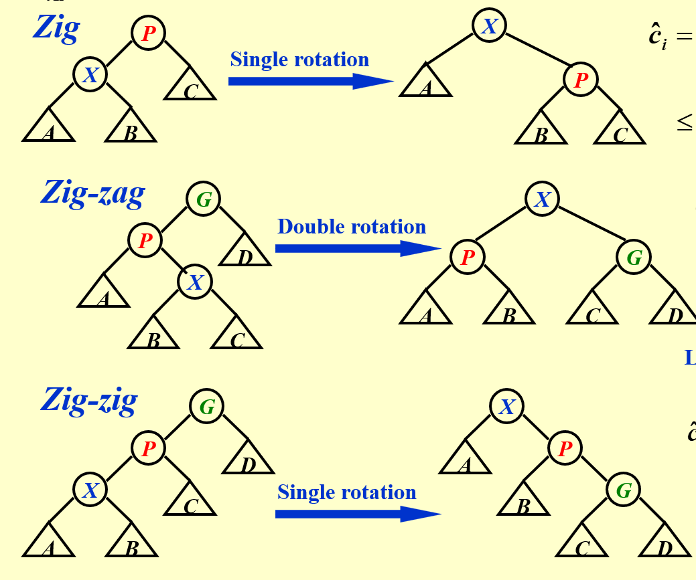
考虑 单个 节点的 Splay 到根的过程，会经历若干次如下过程（其中 zig 至多经过一次）：
-
引理（对数均值不等式）
若有 $a+b \le c$，那么 $\log a + \log b \le 2 \log c - 2$。
证明：等价形式 $4ab \le c^2$，这是显然的。
-
zig
$$ \begin{aligned} \hat{c_i} & = c_i+\varphi(D_i)-\varphi(D_{i-1}) \newline & = 1 - R(P) - R(X) + R(P’) + R(X’) \newline & = 1 + R(P’) - R(X) \newline & \le 1 + R(X’) - R(X) \newline & \le 1 + 3(R(X’)-R(X)) \end{aligned} $$
-
zig-zag
$$ \begin{aligned} \hat{c_i} & = c_i+\varphi(D_i)-\varphi(D_{i-1}) \newline & = 2 - R(G) - R(P) - R(X) + R(G’) + R(P’) + R(X’) \newline & = 2 - R(P) - R(X) + R(G’) + R(P’) \newline & \le 2 + R(G’) + R(P’) - 2 R(X) \newline \end{aligned} $$
由于 $size(G’) + size(P’) \le size(X’)$，由引理 $R(G’)+R(P’) \le 2R(X’)-2$。
进而
$$ \begin{aligned} \hat{c_i} & \le 2(R(X’)-R(X)) \newline & \le 3(R(X’)-R(X)) \end{aligned} $$
-
zig-zig
$$ \begin{aligned} \hat{c_i} & = c_i+\varphi(D_i)-\varphi(D_{i-1}) \newline & = 2 - R(G) - R(P) - R(X) + R(G’) + R(P’) + R(X’) \newline & = 2 - R(P) - R(X) + R(G’) + R(P’) \end{aligned} $$
由于 $size(X) + size(G’) \le size(X’)$，由引理 $R(X)+R(G’) \le 2R(X’)-2$。
进而
$$ \begin{aligned} \hat{c_i} & \le 2R(X’)-2R(X)+R(P’)-R(P) \newline & \le 3(R(X’)-R(X)) \end{aligned} $$
于是，单个节点旋转到根的步数 $\sum\limits_{i=1}^k c_i$ 满足 $\sum\limits_{i=1}^k \hat{c_i} = \left( \sum\limits_{i=1}^k c_i \right )+ \varphi(D_k)-\varphi(D_0)$。$k$ 表示某次操作旋转的次数。
记第 $l$ 次 Splay 操作总耗时为 $F(l)=\sum\limits_{i=1}^k c_i$。由于 $\sum\limits_{i=1}^k \hat{c_i} \leq 3(R(T)-R(X))+1 = \mathcal{O}(\log n)$，所以 $F(l) + \varphi(D_l) - \varphi(D_{l-1}) \leq \mathcal{O}(\log n) $。
再考虑全部操作序列（共 $m$ 次操作）。
$m$ 次操作累加，得 $\sum\limits_{l=1}^m F(l) + \varphi(D_m) - \varphi(D_0)=\mathcal{O}(m \log n) $
由于 $\varphi(D_m) - \varphi(D_0) > 0$，故而 $\sum\limits_{l=1}^m F(l) = \mathcal{O}(m \log n)$。这也是整个算法的复杂度。
Topic 2. Red-Black Tree
-
红黑树的五条性质
- Every node is either red or black.
- The root is black.
- Every leaf (NIL) is black.
- If a node is red, then both its children are black.
- For each node, all simple paths from the node to descendant leaves contain the same number of black nodes.
注意有 NIL，也就是说有个虚拟的叶子节点。
-
红黑树的高度界
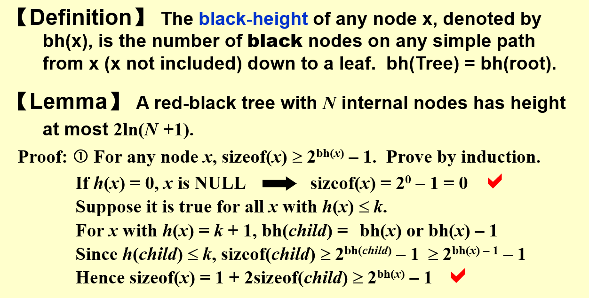
-
插入操作
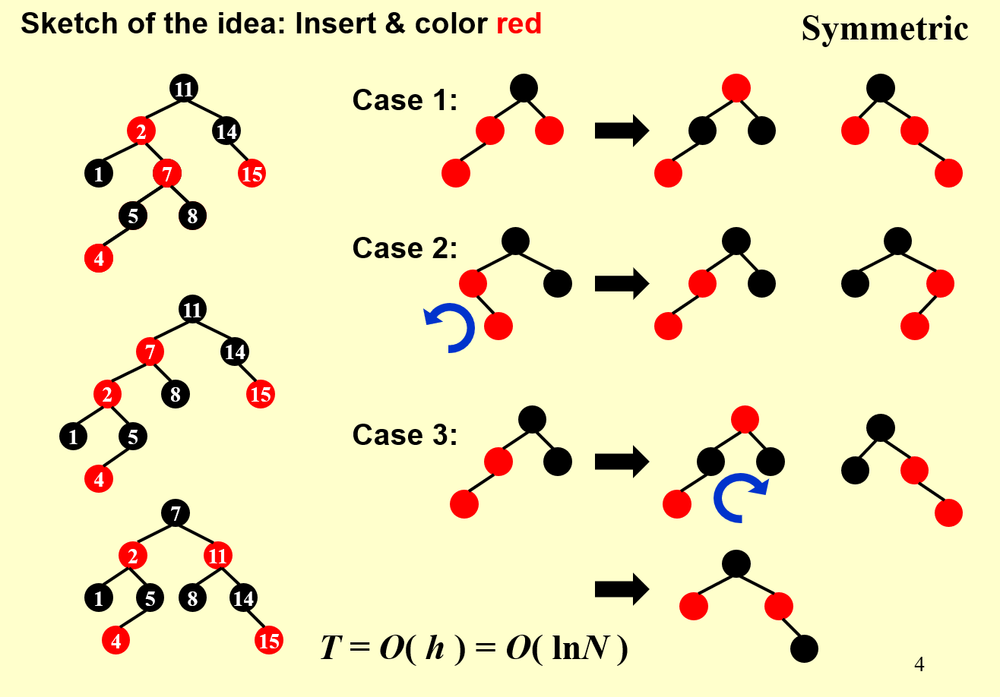
步骤与正确性分析：
-
首先，插入的点令为红点，其父亲若为黑点则可以直接完成插入，接下来只需讨论父亲为红点的情况。记插入红点为 $x$，父亲为 $p$，爷爷为 $g$，叔叔为 $u$。
-
在正确性分析过程中，着重关注性质 4（红子必黑）和性质 5（黑高等同）是否能得到满足。插入前 4/5 均是满足的，插入后性质 4 不再满足（且只有一处），性质 5 依然满足。也就是说，接下来通过归纳证明性质 5 的始终满足，并能经过调整使得性质 4 得到满足。
-
【初始状态】根据 $u$ 的情况分为两类：显然 $u$ 要么为红点要么为 NIL，分别对应到 Case 1 与 Case 3。
-
在接下来的三种 case 的讨论中，我们约定深度最大的那个红点为 $x$，其父亲为 $p$，爷爷为 $g$，叔叔为 $u$。
-
【Case 1】假设调整前此时性质 5 满足，性质 4 只有一处不满足。那么做一次 $g$ 层和 $f,u$ 层的颜色对换。显然对换后 性质 5 依然可以得到满足，性质 4 是否满足则要根据 $g$ 父亲的颜色决定。若 $g$ 父亲为黑色，性质 4 得到满足，状态转移结束，红黑树完成颜色维护；否则，将 $g$ 视作新的 $x$（向上递归），转移到 Case 1/2/3，此后性质 4 依然只会有一处不满足。
值得一提的是，在本 case 中 $x$ 是可能有后代的。因为 Case 1 不一定总是初始状态，也可能由其它的 Case 1 转移而来。
在 Case 1 中 $x$ 和 $f$ 的关系并不重要（$x$ 是 $f$ 的左右儿子都执行的一样的颜色对换操作）。
-
【Case 2】假设调整前此时性质 5 满足，性质 4 有一处不满足。那么我们接下来进行一次左旋即可。不难发现左旋之后性质 5 依然是满足的，但性质 4 则未得到修复（依然有且只有一处不满足）。不过我们转移到了 Case 3。
仍然，在图中可能 $f$ 具有左子树，$x$ 有子代，$u$ 有子代。不过这些并不影响左旋后性质 5 的始终满足，也不会使得左旋后性质 4 在其它地方得到破坏。Case 3 同理，后续不再说明。
-
【Case 3】假设调整前此时性质 5 满足，性质 4 不满足。那么接下来先进行颜色调换，而后右旋。在纸上画一下可以发现这两波操作之后性质 5 依然满足，同时性质 4 在此处得到修复。
-
-
删除操作
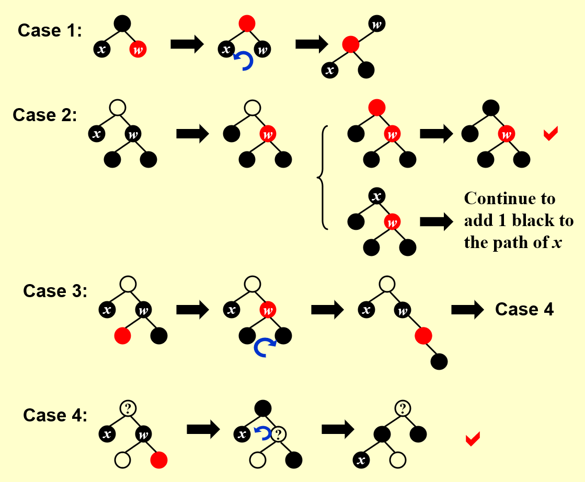
步骤与正确性分析：
-
首先像普通的 BST 那样，在待删除的节点左侧找一个最大的 / 右侧找一个最小的，和待删除节点进行键值交换（不换颜色）。
-
记交换后待删除的节点为 $x$。若 $x$ 为红色则可以直接删除；若为黑色则需要想办法在 $R \to x$ 的路径上加一个黑点（且不影响其他部分，亦即这个黑点只能作用于 $x$ 下的叶子），然后再删除 $x$。接下来只考虑后者。记 $x$ 的父亲为 $p$，兄弟为 $w$，侄子为 $c$。
-
【初始状态】根据 $x$ 的兄弟 $w$ 分到 Case 1 / Case 2.3.4，再根据侄子 $c$ 的情况分为 Case 2 / Case 3 / Case 4。接下来考虑状态转移，正确性分析时性质 5（黑高等同）会是一个难点。
-
【Case 1】调整前性质 4, 5 均满足。通过 $p,w$ 颜色对换以及一次左旋转移到 Case 2/3/4 的情况（注意两次操作后 $x$ 的兄弟变黑了）。不难发现操作和性质 4 和 5 依然是满足的。
-
【Case 2】调整前性质 4, 5 均满足。若 $p$ 为红色，那么可以将 $p,w$ 颜色对换来使得 $R \to x$ 的路径上多一个合适的黑点。调整直接结束。
若 $p$ 为黑色，则我们首先把 $w$ 标红，然后递归地处理 $p$（$x$ 的父亲 $p$ 作为新的 $x$，可能进到 Case 1/2/3/4 中的某个）。注意我们只是要让 $R \to p$ 上的黑点多一个，待删除的 $x$ 本身是 始终不发生移动的。只要能处理好这个递归的子任务后，再删除 $x$ 便可以让 $R \to w$ 和 $R \to p$ 的黑高全部到达一个合法的情况。
注意 Case 2.2 的 Notation 和图片所示有所差异。
-
【Case 3】调整前性质 4, 5 均满足。通过一次 $w,c$ 易色和右旋，改变树的结构以进入 Case 4。显然调整后性质 4, 5 依然是满足的。
-
【Case 4】调整前性质 4, 5 均满足。通过一次 $p,w$ 易色和某个侄子 $c$ 的红变黑，以及一次左旋，使得有且只有 $x$ 处不满足性质 5，其他依然满足，在此情形下删除 5 即可完成维护。同时显然性质 4 一直得到了满足。
-
-
SP：若某操作后发现根是红的，将其染黑即可。
-
红黑树的单次 Insert / Delete 都是 $\log$ 的。
Topic 3. B+ Tree
B+ Tree 的查找时间复杂度是 $O(\log_{\frac{m}{2}}n)$！
B+ Tree 的插入：下图展示了插入 19 的过程。大概思路就是，首先放进对应的节点，如果发现节点吃不消了（大于 $m$）就分裂，然后让父节点儿子数目加 1。如果发现父节点吃不消了（大于 $m$）就再次分裂，让爷节点儿子数目加 1。这个过程是不断向上的，直到某个祖先吃得消为止。
如果到根都吃不消的话，则需要对根进行分裂，然后创建一个新的根节点。

注意上图似乎有些问题。首先按照 Wikipedia 的说法，2-3 树是 B 树而非 B+ 树。其次，大多数网络资源定义 m 阶 B+ 树叶子节点大小为 m-1，非叶节点的孩子数目为 m；ADS 课程中则定义 m 阶 B+ 树叶子节点大小为 m，非叶节点的孩子数目为 m。非常诡异。
// FIXME: 定义问题
Topic 4. Inverted File Index
-
基本存放方法

查找时，例如想找 silver truck，只需要将 10 和 11 号的 Posting List 取并。图中取并后剩下
<1,3>，说明检索结果为 1, 3 两篇文章。Posting List 一般采取链表查询。
-
插入（新文档）
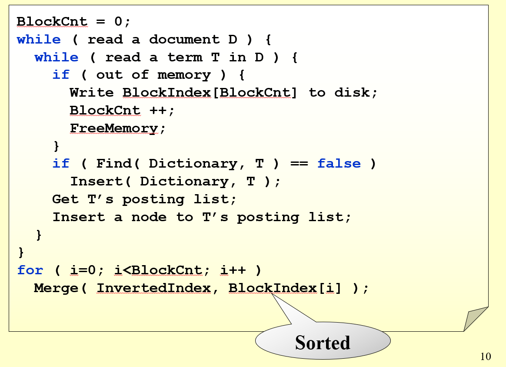
-
read a document D直接遍历所有文档 -
read a term T in D读取所有的 term需要语义分割算法。
-
Find (Dictionary, T)&Insert (Dictionary, T)看某个 term 是否在字典（参见上表 Term 列）中；如果不在则插入。可以使用 B+ / Trie 等数据结构对 Term 进行存储。
-
Insert a node to T's posting list向 $T$ 后面跟的 Posting List 插入本文档的索引。一般使用链表存储 Posting List。因为涉及插入操作且长度不定。
-
-
查询（对于若干词汇）
例如，现有关键词 $A,B,C$，只需要将 $A,B,C$ 的 Posting List 中的链表项取 AND 即可。
-
Tricks
-
Memory 不够时的插入
解决方案如上图所示。当内存不够时，可以把当前处理好的 Posting List 事先写入硬盘，最后在排序之后依次合并（排序是为了归并加速）。
-
Posting List 存储空间不够
使用分布式存储，方案有如下两种（一般而言认为第二种更好）。
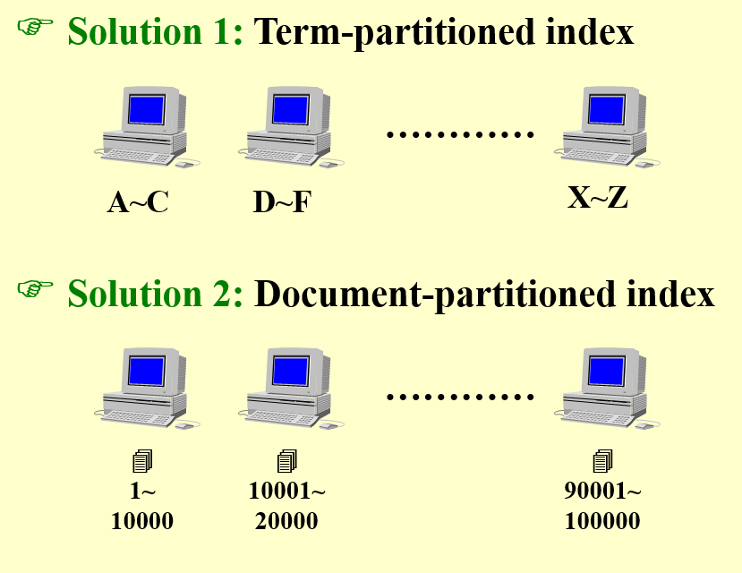
-
Dynamic Indexing
假如整个 Index 的修改需要很长时间，那么一旦产生新文档就将其加入 Index 是一个低效率的方法。
解决方案是将 Index 分为 Main Index（快读慢写）和 Auxiliary Index（慢读快写）。每当有新文档产生时先将其加入 Auxiliary Index，等一定周期（例如一天）统一地将 Auxiliary Index 中的内容加入 Main Index。
注意搜索时需要同时搜索 Main Index 和 Auxiliary Index。
-
Posting List 地址差分压缩
回顾本节的第一幅图。每个 term 实际上对应了一个 Posting List。
每个 Posting List 的地址都不一样，将他们存储下来，例如 ${2,15,47,\cdots,58879,58890,\cdots}$ 可能需要很大的空间开销（例如 long long 都不够存储地址位置）。
一个可能的方法是使用差分「压缩」这些数字的大小。比如上面的例子就可以压缩为 ${2,13(15-2),32(47-15),\cdots,11,\cdots}$，节省数字的存储空间。
-
查询策略：从更稀有的单词开始查找
之前提到，对于关键词 $A,B,C$，要查询对应的文档，只需要将 $A,B,C$ 的 Posting List 中的链表项取 AND 即可。
如果 term $A$ 的链表大小为 $10$，term $B$ 的 $10^3$，term $C$ 的链表大小为 $10^6$，显然以 $A \to B \to C$ 的顺序进行取和更好。
-
-
搜索质量评估
奇了怪了，作业题全是这玩意儿。
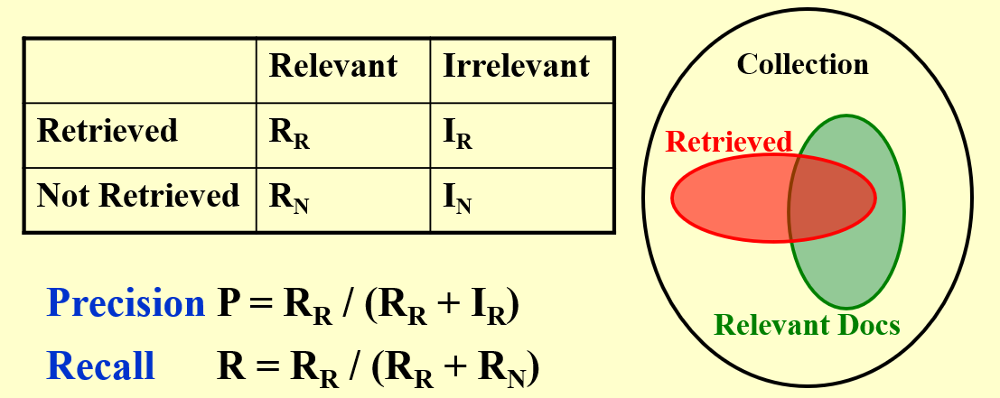
Retrieved 是搜索引擎抓出来的结果；Relevant 是理论上相关，应该被抓出来的结果。
Topic 5. Left Heap & Skew Heap
左偏树使得整个堆的「重心」整体左移，以约束「最右路径」的长度在 log 级别。
左偏树在不改变原有堆操作的复杂度基础上，将合并两堆的时间复杂度降至 log。
-
npl 零路径
The null path length, $\text{Npl}(X)$, of any node X is the length of the shortest path from X to a node without two children. Define Npl(NULL) = –1.
$$\text{Npl}(X) = \min { \text{Npl}(C) + 1 \ | \ \text{C is children of X} }$$
-
左偏树的 npl 性质
对于一个左偏树，满足对于其中的所有节点 $x$，$x$ 左儿子的 npl 必然大于等于右儿子的 npl。
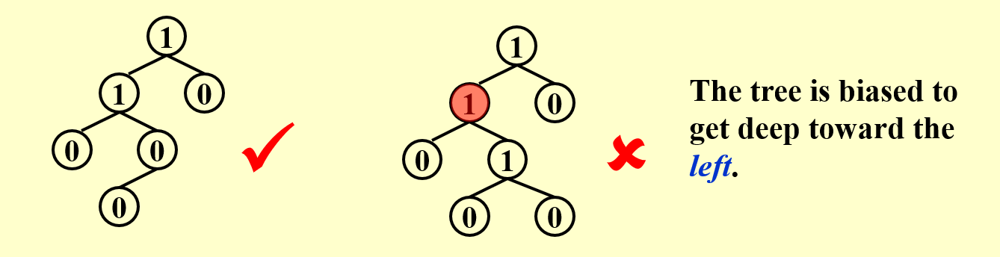
不难发现，对于左偏树中的任何一个节点 $x$，其 null path 一定是以 $x$ 为子树的最右路径。
-
最右路径的 log 上界
证明：对于一个最右路径长度为 $r$ 的左偏树，它至少具有 $2^r-1$ 个节点。
证明考虑归纳。当 $r=1$ 时显然成立。假设本命题对于 $1,2,\cdots,r$ 的情形都成立，我们去证明对于 $r+1$ 的情形依然成立。
最右路径长度为 $r+1$ 的左偏树，其右子树的最右路径长度为 $r$；同时，根据左偏树的 npl 性质，其左子树的最右路径长度至少为 $r$。那么左子树和右子树都至少具有 $2^r-1$ 个节点，于是整棵树至少具有 $2^{r+1}-1$ 个节点。证毕。
-
左偏树的 merge
insert 操作可以看成一种特殊的 merge，所以不必再单独讨论。merge 采取如下递归策略：
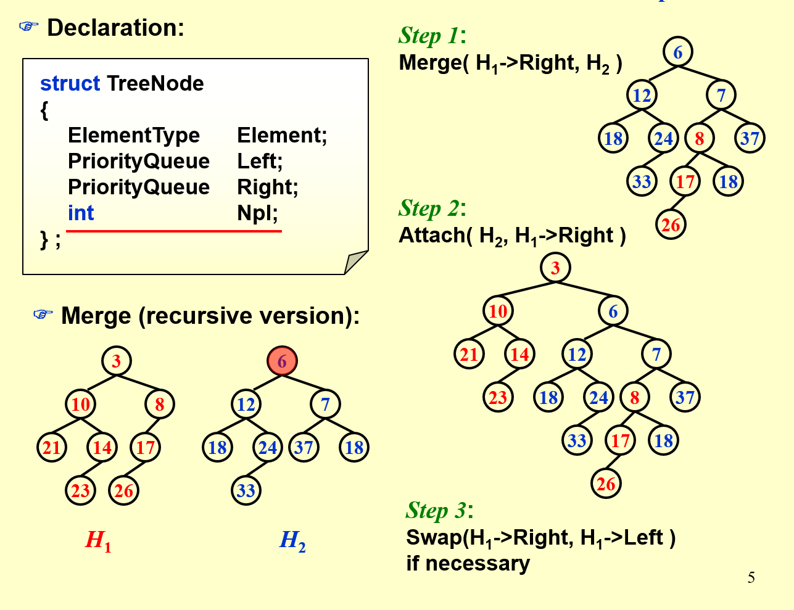
注意递归中，时刻保持 $H_2$ 的根值更大（否则交换）。
关于正确性的证明： 假设在合并前 $H_1,H_2$ 均为合法的左偏树，下证明合并后依然为左偏树。使用归纳证明。假设 step 1
merge(H1 -> Right, H2)是正确的，那么经过 step 2 后 H1 的右子树一定满足左偏性质，同时由于左子树没有动过，亦满足左偏性质。最后经过 step 3 的判断，一定保证 H1 的根满足左偏性质。综上整棵树都满足左偏性质。关于复杂度的证明： 注意每次递归是
merge(H1 -> Right, H2)，这意味着递归后的 $H_1$ 和 $H_2$ 的「最右路径」长度之和总会减一。由于「最右路径」的长度是 log 的，故而单次合并是 $O(\log n)$ 的。
接着说斜堆。注意 斜堆 和 左偏树 不是一种堆，之所以将其放在一起是因为它们的「最右路径」在算法流程或分析中都很关键。
-
斜堆的 merge
insert 和 delete 操作都可以看成一种特殊的 merge，所以不必再分类讨论。
斜堆的 merge 遵循以下规律：
- 对于待合并的节点 $u, v$，通过一次交换机会保证 $val(u)<val(v)$。
- 交换 $u$ 的左右儿子（和左偏树不同的是，此处无脑交换）。
- 将 $u$ 的（交换后的）左儿子和 $v$ 合并。递归下去即可。
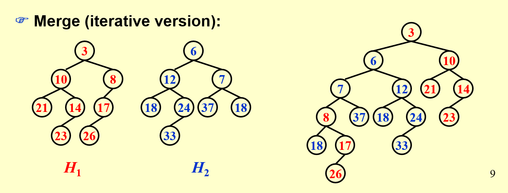
-
斜堆的复杂度分析
可以证明，skew heap 的均摊复杂度为 $\Theta(\log n)$。需要使用势能分析的方法。
定义 重节点（注意和树剖中的定义不同）：若 $x$ 的左儿子数目大于右儿子数目，则称 $x$ 为重节点，反之称轻节点。
定义 势能函数 $\phi(D_i)$（其中 $D_i$ 表示第 $i$ 时刻的「堆森林」）为 $D_i$ 中重节点的数目。
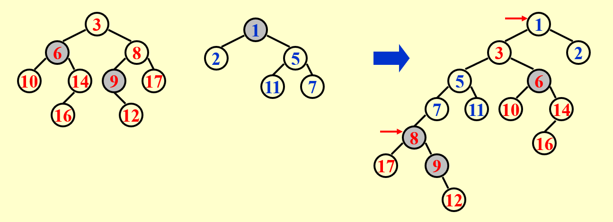
考虑一次 merge 操作。记待合并的两堆分别为 1 号堆和 2 号堆，它们「最右路径」上的轻节点数目分别为 $l_1,l_2$，「最右路径」上的重节点数目分别为 $h_1,h_2$，非「最右路径」上的重节点数目之和为 $h$。
合并之前，$\phi(D_i)=h_1+h_2+h$。
注意在单次合并的递归过程中，我们的（递归的）待合并节点 $u,v$ 一定始终在初始两堆的「最右路径」上。这意味着 合并不会改变任何不在「最右路径」上的节点的轻重特性。(1)
接着考虑初始「最右路径」上的重节点们，经过合并之后它们一定会变成轻节点。这是因为原本它们的左儿子就更大，在交换之后右儿子一定更大，并且后续还会向右儿子合并节点，所以无论如何在合并之后它们一定会变为轻节点。(2)
至于初始「最右路径」上的轻节点们，在合并之后它们既可能为轻，亦可能为重。(3)
根据上述三个特性，我们在合并之后必然有 $\phi(D_i) \le l_1+l_2+h$。
不难发现，一次合并至多只会对「最右路径」上的节点进行遍历。故而一次合并的时间开销为 $T_{worst}=l_1+l_2+h_1+h_2$。根据势能分析法，记均摊复杂度为 $T_{amortized}$，那么有
$$T_{amortized}=T_{worst}+\phi(D_{i+1})-\phi(D_i) \leq 2(l_1+l_2)$$
而 $l_1+l_2$ 是 log 级别的。证明可以考虑这样一个思想实验：从最右链的叶子向上跳，每跳一个轻节点都会让子树大小至少翻倍。
势能函数 $\phi$ 始终非负。所以均摊合并复杂度为 $O(\log n)$。
Topic 6. Binomial Queue 二项队列
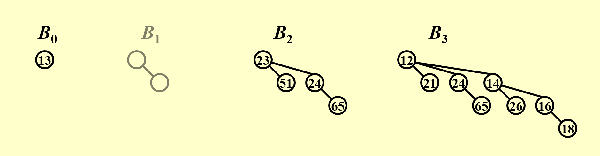
二项队列由若干个大小为 $2^k$ 的堆构成。类似于二进制分解，比如 $13=2^3+2^2+2^0$，则大小为 $13$ 的二项队列由 $k=3,2,0$ 的堆构成。
-
二项队列的 Merge
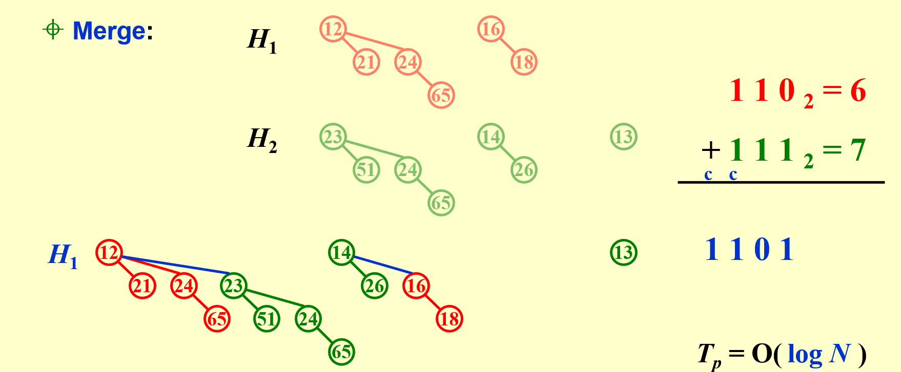
类似于二进制加法。二项队列的插入可直接视作合并。
-
二项队列的 Delete Min
首先找到所有 root 中的最小值。这部分是 log 的。
设整个队列为 $H$，最小 root 所在的堆为 $H_m$。将 $H_m$ 的 root 删除，$H_m$ 分裂成若干个堆。
将 $H_m$ 与 $H-H_m$ 合并。这部分也是 log 的。总的也是 log 的。
-
【Claim】A binomial queue of N elements can be built by N successive insertions in $O(N)$ time.
考虑势能分析。记 $\phi_i$ 为第 $i$ 次合并之后二项队列中堆的数目。
显然有 $c_i+\phi_{i}-\phi_{i-1}=2$（考虑加入一个点，首先是 1 单位操作；此外也增加了一颗 $B_0$，势能函数加 1；最后每产生一次进位会使用 1 单位操作，但也会让堆的数目减 1）。
求和，$\sum_{i=1}^n (c_i+\phi_{i}-\phi_{i-1}) = \sum_{i=1}^n c_i + \phi_n - \phi_0=2n$。
显然 $\phi_n \ge \phi_0$，所以总复杂度为 $O(n)$。
-
二项队列的实现细节
-
「左孩子右兄弟」的存储方式。
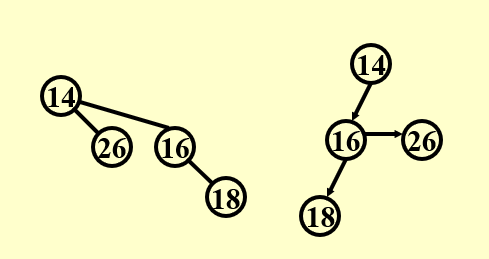
注意和之前算法中的顺序是反的。例如对于上上张图中的 $B_3$，第二层的链接方式应当是
14 -> 24 -> 21。 -
合并：两个堆的合并是 $O(1)$ 的（注意整个队列的合并依然是 log 的）
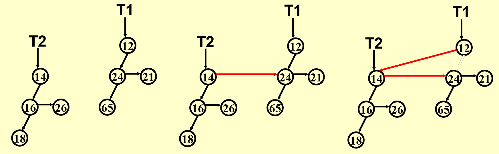
-
删除：会发现在如此的「倒序」存储方式下，对于一个堆 $H$，将其 root 删除后，剩下的二层的堆们刚好可以依次排到队列的相应位置（颅内理解一下），所以就很方便。
-
Topic 7. Backtracking: Alpha-Beta 剪枝
考虑一个 Game Tree，根据博弈的规则，如果每个结点的值表示某种人为定义的「分数」，那么在搜索树上一定是 一层取 min，一层取 max，交替进行 的。
对于这种特殊的搜索，我们有 alpha-beta 剪枝策略。
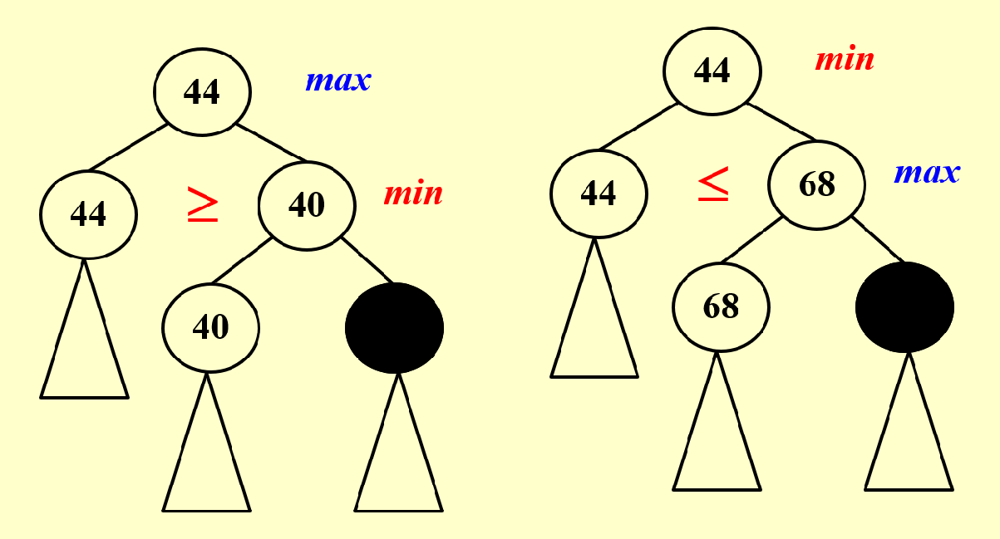
例如，对于上图的黑色节点代表的子搜索树，都是可以被剪掉的。使用 alpha-beta 剪枝的搜索复杂度为 $O(\sqrt{n})$。
Topic 8. Master Method 主定理
先拐另外一个话题，复杂度递推。考虑式子 $T(N)=2T(\frac{N}{2})+N$，我们可以算得 $T(N)=\mathcal{O}(n \log n)$。注意右侧是非常容易犯的一个错误，可以理解为 $c$ 必须是全局的 $c$，所以这里相当于常系数变成了 $c+1$，这样累加下去是不允许的。
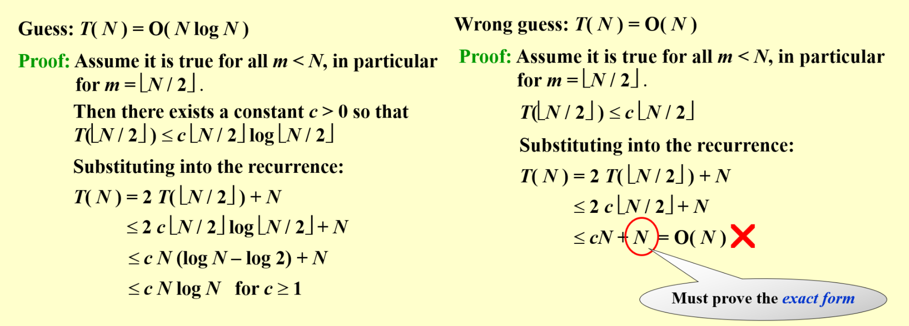
然后是主定理：
主定理形式 1
The recurrence $T(N) = aT(N/b) + f(N)$ can be solved as follows:
-
If $af(N/b) \le kf(N)$ for some constant $k < 1$, then $T(N) = \Theta(f(N))$
-
If $af(N/b) \ge Kf(N)$ for some constant $K > 1$, then $T(N) = \Theta(N^{\log_ba})$
-
If $af(N/b) = f(N)$, then $T(N) = \Theta(f(N) \log_bN)$
一个不严谨的证明 / 记忆方法是使用递归树：
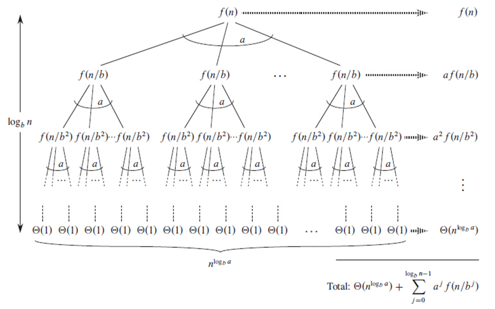
对于 Case 1 和 Case 2，很容易使用放缩然后几何级数求和可得。对于 Case 3，说明每一层的开销都一样，然后一共有 $\log_b N$ 层。
主定理形式 2（幂函数形式）
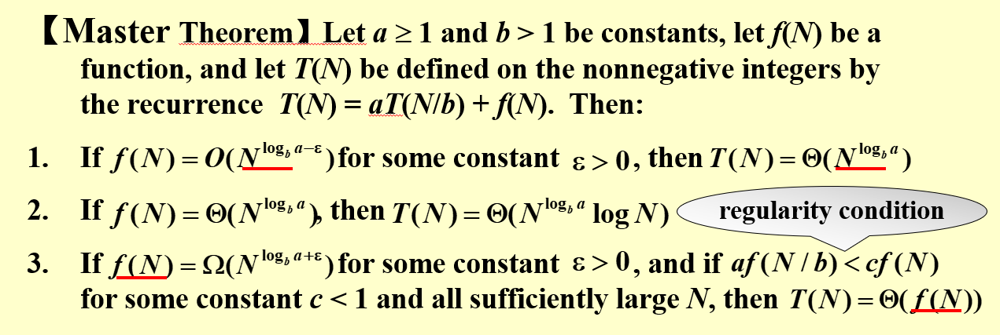
主定理形式 3（幂函数加对数形式）
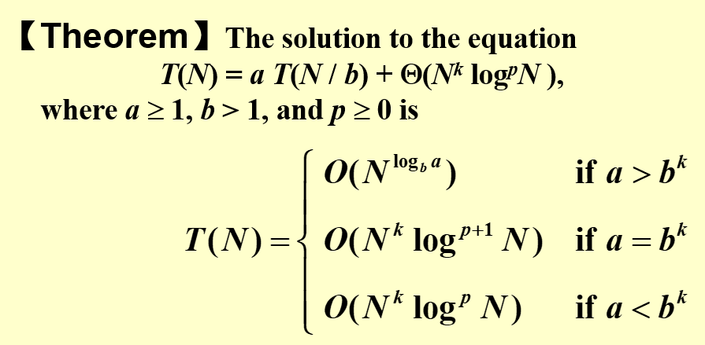
Topic SP. Lesson from Mid-Term Exam
-
看红黑树。至少对插入操作非常熟悉。
-
看 B+ 树。考前手推几个 case。
-
要不下次先做选择题？
Topic 9. 计算理论基础
-
Turing Machine
-
确定性图灵机 (DTM)：类似于一个状态机。根据当前状态和纸带上的字符，可以跳转到下一个状态，或者覆写当前的字符。
-
非确定性图灵机 (NTM)：可以视作一次可以转移到多个状态的 DTM（无限并行），也可以视作一个「运气极好」的 DTM，每次转移都是转移到最好的结果。
-
-
P, NP, NP-Hard, NPC
-
P 问题：可在多项式时间内被 DTM 所解决（判定）的问题。
-
NP 问题：可在多项式时间内被 NTM 所解决（判定）的问题。
或者说，可在多项式时间内被 DTM 验证某个解是否正确的问题。
-
NP-Hard 问题：如果一个问题可以被所有的 NP 问题归约到，那么它是 NP-Hard 问题。
-
NPC 问题：如果一个问题既是 NP-Hard，又是 NP 问题，那么称其为 NPC 问题。
-
-
P 与 NP
目前只知道 $P \subseteq NP$，但究竟是 $P \subset NP$ 还是 $P=NP$ 尚无定论。似乎学界更为倾向于前者。

-
证明一个问题是 NPC 的
-
证明它是一个 NP 问题（可在多项式时间内被 DTM 验证某个答案是否正确）
-
证明某个已知的 NPC 问题可以被归约到它
-
-
co-NP 不等于 NP
NP 问题的反不一定是 NP 问题。例如如果问一张图中是否存在 Hamilton 回路，我们可以在多项式时间内验证某个解是否正确（因为这个解包含了一种具体的路径）；但我们无法在多项式时间内验证反问题，既「一张图中是否不存在 Hamilton 回路」，我们无法在多项式时间内验证某个解是否正确，因为只有试过所有的路径，我们才能断言不存在 Hamilton 回路。
-
形式语言理论
-
抽象化问题、语言

大概是说，可以把一个求答案的问题转化为若干个 0/1 decision 问题？
定义语言 $L = \{x \in \Sigma^{*}: Q(x) = 1 \}$。其中 $Q(x) = 1$ 表示某 01 字符串 $x$ 描述了某一个 decision 问题实例，并且这个问题实例有解。
-
在形式语言理论下，我们可以更形式化地定义 P 和 NP 问题
$$P = \{L \subseteq \{0,1\}^{*}: \text{There exists an algorithm A that decides L in poly time}\}$$
此处 decide 意为算法 $A$ 必须要找到所有属于 $L$ 语言的 $x$（亦即 $Q(x)=1$），不重不漏。
同时若有
$$L = \{x \in \{0,1\}^{*}: \text{There exists a certificate } y \text{ with } |y|=O(|x|^c) \text{ such that } A(x,y)=1 \}$$
成立，则 $L$ 描述了一个 NP 问题。注意这个不知道从哪里蹦出来的解 $y$，它本身也得是多项式规模的。
例如，假设 $Q(x)=1$ 当且仅当 $x$ 描述了某个无向图且这个图从 $S$ 到 $T$ 的最短路小于等于 $k$，这是一个 decision 问题。确实存在一个算法 $A$，能在多项式时间内找出集合 $L$，所以这个 decision 问题是 P 的。
再如，假设 $Q(x)=1$ 当且仅当 $x$ 语言所描述的是某个 $9 \times 9$ 数独且其有解。显然，不存在多项式算法 $A$ 来 decide 集合 $L$（因为判断单个数独是否有解无法在 poly-time 内完成），所以数独的求解不是一个 P 问题。
但是对于某一个 $x \in \{0,1\}^{*}$，当我们给定一个特定的解 $y$ 时，此时就有了题面 $x$ 和某答案 $y$ 的组合。若我们可以在多项式时间内确定 $A(x,y) = 1$，这说明我们可以在多项式时间内验证 $L$。所以数独的求解是一个 NP 问题。
-
Topic 10. Approximation
-
Packing Problem
-
问题：若干个体积为 $[0,1]$ 的物品，装到尽量少的体积为 $1$ 的箱子里。
-
在线估计：Next Fit（顺序瞎装，不够就开）/ First Fit（装到目前第一个能装的，不够就开）/ Best Fit（装到目前能装的且余空间最小的，不够就开）
可以证明，无论何种在线 approximation，最坏情况答案都会达到最优解的 $\frac{5}{3}$ 倍。
对于 Next Fit，上界是 $2$ 倍。
对于 First Fit / Best Fit，上界是 $1.7$ 倍。
-
离线估计：先降序排序，然后用 First Fit 或者 Best Fit。
离线估计的 FF/BF 又称为 FFD / BFD，上界是 $1.5$ 倍。当规模大时，上界约为 $\frac{11}{9}$ 倍。
-
-
Knapsack Problem
-
问题：$p_i$ 表价值，$w_i$ 表体积。01 背包。
-
估计：可以证明，贪心算法（取 $p_i$ 贪心和 $\frac{p_i}{w_i}$ 贪心的 max 者）得到的答案一定不超过实际最优解的 2 倍。
证明：
引入另外一个问题：分数背包，每个物品可以取 $0\leq x_i\leq 1 (x_i \in \mathcal{Q})$ 个。
$p_{max}$ 指 $p_i$ 贪心答案，$p_{dens}$ 指 $\frac{p_i}{w_i}$ 贪心答案，$p_{greedy}$ 指两者 max。
$p_{opt}$ 指 01 背包最优解，$p_{frac}$ 指分数背包最优解。
列举一些不等式：
-
$p_{max} \leq P_{opt} \leq P_{frac}$
-
$p_{max} \leq P_{greedy}$
-
$P_{opt} \leq P_{greedy} + p_{max}$
这是因为考虑分数背包，一定是由 $\frac{p_i}{w_i}$ 贪心结果加上一个不超过 $p_{max}$ 的玩意儿构成的。
于是有
$$ \frac{P_{opt}}{P_{greedy}} \leq 1 + \frac{p_{max}}{P_{greedy}} \leq 2$$
-
-
传统的 01 背包算法
正常来说 01 背包的复杂度是 $\mathcal{O}(n^2p)$（其实也可以是 $\mathcal{O}(n^2w)$，但本质上都差不多）。看似是多项式的复杂度，然而 $p$ 可以很大（若输入长度为 $l$，则可以到 $2^l$）。

一个可能的做法是把 $p$ 给搞小。具体地，我们令
$$K=\epsilon\frac{P_{\max}}{n}, p_i’=\frac{p_i}{K}$$
理论上可以将时间复杂度压至 $\mathcal{O}(n^3/\epsilon)$。这样得到的答案 $P_{alg}$ 满足 $(1+\epsilon)P_{alg}\ge P_{opt}$。
-
-
Clustering Problem
-
问题：给定 $n$ 个点，使用 $K$ 个圆进行覆盖，最小化圆半径。
-
估计：对于某个最优解 $r^{}$，如果我们令 $r=2r^{}$，则存在如下的一种次解：所有圆心都在点上。这个事情很显然，因为对于半径为 $r^{}$ 的圆，其内所有点的两两距离都小于 $2r^{}$。
-
寻找圆心：
可以使用二分（二分 $r=2r^{*}$ ），若需要的圆数目大于 $K$，说明接下来应扩大半径，反之尝试缩小半径。
也可以每次找离当前 center 集合最远的点，如此迭代 $k$ 次直接得到答案。
总之，用这一套方法找到的答案一定小于等于实际最优解的 2 倍。
-
Topic 11. Local Search
-
邻域搜索
对于一个凸优化问题，直接根据当前状态往最优解靠近显然是能找到全局最优的。
可惜有的时候问题不那么凸，所以这种靠近只能找到邻域内的最优。是为 Local Search。
-
模拟退火
在 Local Search 的基础上加了和温度相关的随机跳出。
-
Example: Max-Cut Problem
-
问题：给一张图 $G$，点黑白染色，使得异色边权和最大。
-
LS 算法：对于当前图状态 $G_{cur}$，如果换某个点的颜色可以让答案更大就换，反之不换。
首先这个算法肯定是能结束的，因为答案一直在增加，但是有上界。
不难证明，这种 Local Search 所得答案 $w(A,B) \ge \frac{1}{2} w(A^,B^)$。
-
平衡 Accuracy 和 Complexity
上面的这种算法实际上不是多项式的。比如最坏情况下答案每次迭代就加 $1$，但是边权可以很大，可能会炸到 $\mathcal{O}(nW)$。
如果采取这样的一种算法：换色当且仅当对答案的提升超过 $\frac{2\epsilon}{|V|} w(A,B)$，其中 $w(A,B)$ 是当前的答案。
不难证明，在这种 trade-off 下，答案界变为 $(2+\epsilon)w(A,B) \ge w(A^,B^)$。
但相应地，复杂度优化至 $\mathcal{O}(n / \epsilon \log W)$。
-
冷知识：上述的 $w(A^,B^)$ 换成全图边权和 $w_{tot}$ 也是对的，因为就是这么放缩来的。
-
Topic 12. Randomized Algorithm
-
Hiring Problem
$n$ 个人依次来面试，每个人都有能力值 $q_i$。面试一个人花费 $Ci$，对一个人「签定金」花费 $Ch$。目标是 尽可能少花费，保证能力值最高的人被签下。需要即时决策。
【随机初始化】将 $n$ 个人的面试顺序随机，然后一个个面。如果当前 interviewee 能力值比之前都高，就签下定金。
第 $i$ 个人被签的概率为 $\frac{1}{i}$。所以期望花费为 $n \times Ci + \ln n \times Ch$。
-
Hiring Problem II
前问题的基础上，要求至多签下一人。目标是 要求签下最高能力值的人概率尽可能大，不再考虑花费。
【只签一人策略】前 $k$ 个人一概不签，从第 $k+1$ 个人开始遇到比之前好的就签下，然后直接结束。我们来算一下这种策略签下最高能力者的概率：

可以发现 $\text{Pr}(S) \ge \frac{k}{N} \ln \frac{N}{k}$。根据数学知识可知 $k=N/e$ 取到最优。此时成功概率为 $\frac{1}{e}$。
-
Quick Sort
就那个带 pivot 的排序。这个排序最差复杂度是 $\mathcal{O}(n^2)$ 的，但期望是 $\mathcal{O}(n \ln n)$ 的（证明考虑枚举两点 $i,j$，考虑这两点之间产生比较的概率为 $\frac{2}{|i-j|}$）。
一个更稳定的方法是找到中间的 pivot（没找到就重新找，期望找寻次数为 2）。

Topic 13. Parallel Algorithm
Topic 14. External Merge Sort
妈的，和 DBS 讲的又有点不一样。个人理解是，DBS 那边没有采取多个 tapes 的概念，而是直接认为每一轮的数据都只存储在一个磁盘（一个 tape）中。
所以 seek 的次数也有所不同：这边由于采用了多个磁带，磁头均是线性向前移动的，节省了大量的寻道时间。

由于采取了堆来进行排序，所以我们认为 $k$-way merge 恰好只需要 $k$ 个单位的内存即可实现（而不是 $k+1$ 个）。需要的磁带数目为 $2k$（反复使用，$k$ 个存之前，$k$ 个存之后）。进行的 pass 数目为 $1 + \lceil \log_k (N/k)\rceil$。
-
Optimization 1: Reducing the Number of Tapes
考虑如何用 3 个 tapes 来完成 2-way merge（$k=2$）:

如上图所示，注意进行归并的 run 长度可能不同。起始 run 数目需要满足「斐波拉契数列」才能完美完成。另外上图中可以认为起始 run 长度为 $2$。
和下图这种方式的优势在于，可以省下 copy 的时间（下图将 17 runs 分裂为 9 runs + 8 runs 相当于做了一次 copy）。

-
Optimization 2: Using Block as Unit
和 DBS 那边一样，使用一个 block 来表示一个单位。
如此的话，整个内存 buffer 会被拆分成 $k$ 个 input buffer 和 $1$ 个 output buffer。

-
Optimization 3: Replacement Selection